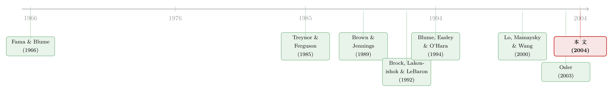

K 线图量的不是涨跌，而是订单簿上那道「人墙」
本文读的是 Kavajecz & Odders-White (2004, Review of Financial Studies)：他们把技术分析从「能不能预测价格」这个被吵了半个世纪的老问题里抽身出来，换了一个谁都没问过的角度——技术分析其实在「探测」限价订单簿上的流动性。支撑/阻力位恰好落在订单簿深度的「峰」上，移动平均线则透露出深度在买卖两侧的「偏斜」；而且因果方向是订单先在那里、技术指标随后把它「找」了出来。
1 一个吵了半个世纪、却始终没吵明白的架
先讲一桩学术界与华尔街之间长期不和的公案。
一边是投资圈：几乎每一家投行、每一家交易公司，都养着一批盯着 K 线、画着支撑位阻力位、算着移动平均线的人。技术分析 (technical analysis)——也就是用过去的价格和成交量去推断未来价格的方向——是一门有国际协会、有从业认证、有海量教科书的「手艺」。
另一边是学院派：他们对技术分析嗤之以鼻。理由很硬——市场有效 (market efficiency) 假说说，所有可得的信息都应当已经反映在价格里；如果靠历史价格就能赚到超额收益，那等于在说存在一台几乎无风险的印钞机，而这种状态在均衡里是不可能持续的。
于是两拨人各执一词，谁也说服不了谁。文献里翻来覆去地做的，几乎全是同一件事：拿一条技术交易规则，去看它能不能预测未来的成交价。有人找到了支持实践派的证据（Brock, Lakonishok, and LeBaron 1992；Lo, Mamaysky, and Wang 2000），也有人反过来说那点收益一进交易成本就被吃光了（Fama and Blume 1966；Bessembinder and Chan 1998；Ready 2002），还有人警告说这里全是数据窥探 (data-snooping) 的陷阱（Sullivan, Timmermann, and White 1999）。证据是混的，结论也就一直悬着。
接着，一个自然的问题是：会不会大家从一开始就问错了问题？
这正是 Kavajecz 和 Odders-White 的切入点。他们说，别再死盯着「技术分析能不能预测成交价」了。成交价是供给流动性的人和索取即时成交的人两股力量博弈的结果；以往的研究把这两股力量搅在一起看，结论自然纠缠不清。那不如把镜头只对准其中一侧——流动性的供给，也就是挂在限价订单簿 (limit order book) 上的那些限价单。
本文要反复讲透的就是这一个核心：技术分析的那些线，量的根本不是「价格往哪走」，而是「此刻订单簿上的流动性长什么样」。支撑/阻力位对应着深度的高峰，移动平均线对应着深度的偏斜。明白了这一层，技术分析与市场有效之间那道看似不可调和的裂缝，就被巧妙地绕了过去。
2 两个假设：把「线」翻译成「订单簿」
作者把这个核心拆成两个可检验的假设，逻辑非常干净。
第一个假设盯住的是支撑/阻力位。Kavajecz (1999) 早就发现，限价订单簿上的供需曲线很少是平滑的；相反，常常有那么几个限价点，堆着不成比例的大量股票——一个个流动性的「峰」。道理也直白：当某个价位上排着一大堵「人墙」准备接你的单，这个价位就天然成了价格继续往极端走的障碍。而支撑位（阻力位）的定义本就是：要突破它，得有相当大的卖压（买压）。两者描述的，会不会其实是同一堵墙？于是有了第一个假设——技术分析的支撑/阻力位，与限价订单簿上的流动性高峰相关。
第二个假设盯住移动平均线。移动平均指标靠比较长期与短期均线来度量动量：当短期均线升破长期均线，技术派相信价格正进入一个新的、更高的交易区间。果真如此的话，报价中点会越来越靠近订单簿卖方那一侧的深度高峰，同时离买方的高峰越来越远。换句话说，移动平均指标透露的，是订单簿两侧深度相对于报价的那种「偏斜 (skewness)」。于是第二个假设——移动平均指标揭示了订单簿上深度的相对位置。
到这里，叙事的张力已经搭好了：如果这两个假设成立，那么「画线」这件看似玄学的事，本质上是在用免费可得的历史价格，去读一份本来很难实时拿到的订单簿地图。
3 数据：把一张订单簿「重建」出来
要检验这两个假设，得先有订单簿。问题是，1997 年的纽交所 (NYSE) 并不会把整本限价订单簿端给你看。
作者用的是 NYSE 提供的 SuperDOT 数据，覆盖 110 只 NYSE 股票，时间是 1997 年 7 月到 9 月（这 110 只股票是原始 TORQ 样本 144 只里，到 1996 年 11 月仍在 NYSE 交易的那部分）。这套数据里有报价、成交和订单三类记录。
关键的一步在于重建订单簿，方法沿用 Kavajecz (1999)。直觉是：任意一个时点的订单簿，应当等于此前所有订单，减去已经成交和已经撤销的部分。具体做法是先把 1997 年 7 月 1 日之前到达的限价单拢成一个初始的「预订单簿 (prebook)」；之后逐条处理后续记录——新单加进来，成交和撤销记录则去匹配并抵消簿上已有的订单，剩下的残量就是该时刻的订单簿估计。这样滚动更新，就得到一连串订单簿的「快照」：每只股票每天在开盘报价处取一张、之后每隔半小时取一张，一天 14 张。
这是这篇文章常被忽略的硬功夫：它的「因变量」——订单簿深度——不是现成的观测值，而是一套逐条回放、重建出来的估计。后面所有结论的可信度，都压在这套重建的质量上。
4 四把尺子量深度，两条规则定线
有了订单簿，接着要把「深度」和「技术线」都量化成可以放进回归的变量。
先是深度。作者在订单簿每一侧各用四种累积深度的测度，各有侧重：
- mode（众数）：在每一侧取股票数最多的两个限价点，选离报价更近的那个。它代表订单簿上「第一道大障碍」，也就是最显著的那个支撑/阻力位。选近的那个，是为了反映当下的交易兴趣，而不是被远处那些挂了很久的陈单带偏。
- near depth（近端深度）：围绕报价中点画一条带子（带宽 = 半小时收益率标准差 × 报价中点 × 10），算「半条带宽以内的深度」占「整条带宽以内深度」的比。越接近 1，说明深度越集中在报价附近；越接近 0，说明深度摊得很散。
- 5% ADV：能从订单簿买进（或卖出）相当于该股日均成交量
5%的那一单的最后成交价。 - 90th ATP：用该股成交规模分布的第 90 百分位作为交易量，算执行这笔交易的平均每股价格（注意 5% ADV 取的是最后一股的价，90th ATP 取的是平均价）。
后两把尺子相对成交量来定义，所以并不总是有定义——有时订单簿太薄，根本凑不出 5% 日均量的货。
再是技术线。每隔半小时，用前一周（即最近 70 个半小时观测）的买卖价来算。支撑位是过去一周里出现过的最低买价，前提是这个最低价在该期内至少被触及两次，否则视为无定义；阻力位用最高卖价对称地定义。这正对应技术派「用近期低点定支撑、近期高点定阻力」的习惯：
$$ P^{s}_{t}= \begin{cases} \min(Bid_{t-w},\dots,Bid_{t}) & \text{if } P^{s}_{t}=Bid_{i}=Bid_{j}\ \text{for some } i,j\in(t-w,t)\\[4pt] \text{undefined} & \text{otherwise} \end{cases} $$
$$ P^{R}_{t}= \begin{cases} \max(Ask_{t-w},\dots,Ask_{t}) & \text{if } P^{R}_{t}=Ask_{i}=Ask_{j}\ \text{for some } i,j\in(t-w,t)\\[4pt] \text{undefined} & \text{otherwise} \end{cases} $$
移动平均指标则比较长短两条均线：长窗取过去两周，短窗取其四分之一（2.5 天）；只有当短期均线偏离长期均线超过一条带宽 \(B\)（外生设为 3%）时才触发信号，否则取中性的 0。这条带子的作用，按 Brock, Lakonishok, and LeBaron (1992) 的说法，是滤掉来回拉锯的「假信号 (whiplash signals)」，把注意力放在真正显著的偏离上。下面这条核心规则，我把它逐块标注出来：
其中 \(MA^{S}_{t}=\sum_{k=1}^{S}P_{t-k}/S\)，\(MA^{L}_{t}=\sum_{k=1}^{L}P_{t-k}/L\)，\(P\) 为报价中点价，\(S\)、\(L\) 分别是短、长窗里的半小时期数。
技术分析终究「更像艺术而非科学」：同一份数据，不同的技师能画出不同的线，因为规则没有唯一标准。作者坦承，他们定义的这套规则未必和某位具体技师用的一模一样。但他们的逻辑是——只要我们这套规则和订单簿流动性之间存在稳健的关系，就足以证明「历史价格能传递关于当前流动性的信息」这件事本身。
5 主要结果：线确实压在「人墙」上
先看一组描述性事实（如表 1 所示）。
支撑/阻力位在样本中有 50.5% 的时间是有定义的——也就是说，大约一半时间里，过去一周的最低买价/最高卖价曾被触及至少两次。当它们存在时，支撑/阻力价偏离报价中点平均 $0.80、中位数 $0.38。而对应的订单簿变量呢？众数 (mode) 和 5% ADV 这两个测度，与报价中点的中位数距离，跟支撑/阻力位的中位数距离非常接近——这正是第一个假设想要看到的「同框」证据：技术线和订单簿深度高峰，落在差不多的地方。
移动平均指标这边也有意思。77% 的时间它是中性的（取 0）；触发正信号占 13.9%，负信号占 9.0%，非中性状态平均能持续约 4 天。但有一个反直觉的细节：这套指标本是为预测短期动量而设计的，样本里却伴随着报价中点的反转——正信号之后中位数总收益是 −0.6%，负信号之后反而是 +0.6%。换句话说，在这三个月的样本里，移动平均线更像在标记「即将反转」而非「动量延续」。
这个「动量信号却跟着反转」的细节很重要：它提醒我们，本文的主张从来不是「技术分析能赚钱」，而是「技术分析在描述订单簿」。信号之后价格往哪走是一回事，信号此刻照见了订单簿的什么结构，是另一回事——后者才是本文的命门。
但描述性统计只是「看起来像」。真正关键的一步，是把这层关系从「市场状态」这个共同的搅局者里干净地剥出来。作者的做法是：先把每个序列都减去报价中点，再做回归。减去中点有两个用意——一是消掉价格序列里单位根带来的非平稳；二是剔除「任何报价的函数」与「订单簿上的价格」之间那种机械性的关联，免得关系是被会计恒等式式地凑出来的。
在此基础上，他们用买方订单簿测度对支撑位回归、卖方测度对阻力位回归，并且同时给出单变量回归和控制了市场状态的多变量回归——控制变量就是文献里常用来刻画市场状态的那几个：当前买卖价差、总报价深度等，用来吸收非对称信息风险和存货风险。结果是：即便控制了交易环境，支撑/阻力位对「高累积深度的限价点」仍有显著的解释力。第一个假设站住了。第二个假设同样得到支持：移动平均指标能解释订单簿累积深度相对位置的变化——当强烈买压触发正信号，报价会沿着订单簿「向上走 (walk up the book)」，较低价位的卖单要么成交、要么撤掉。这与「移动平均度量深度偏斜」的预期完全吻合。
于是，反转出现了——但不是收益的反转，而是因果方向的反转。一个自然的追问是：到底是技术线制造了这些深度高峰（比如交易者照着支撑位去挂单），还是技术线只是发现了本就堆在那里的深度？作者用 Granger 因果检验和对限价单下单行为的分析回答：是后者。技术分析测度是在「发现」订单簿上已经就位的那一团团深度。这些订单簇，可能来自对资产价值有强烈看法的知情交易者，也可能来自为了管理逆向选择与执行风险而扎堆在特定价位的流动性交易者；无论是哪一种，技术线都只是一面把它们照出来的镜子。
这一步，恰恰是全文最漂亮的地方。它把技术分析与市场有效之间的「冲突」彻底化解掉了：技术分析之所以「有用」，不是因为它预言了未来、违背了有效市场，而是因为它把一份本就存在、却难以实时获取的订单簿信息，用人人都看得到的历史价格给翻译了出来。（关于「限价订单簿本身就是一座流动性的集市」这个视角，可参见《买卖价差为什么会「自己长回去」？》。）
6 文献脉络
把这篇文章放回它所在的那条线里，能看得更清楚。
最早的争论几乎是一边倒的「技术分析无用论」：Fama and Blume (1966) 用过滤法则 (filter rules) 表明，一旦计入交易成本，技术分析的那点好处就所剩无几。但到了 1980 年代，理论开始为技术分析「平反」——Treynor and Ferguson (1985) 和 Brown and Jennings (1989) 构造了一类模型，其中私有信息的投资者会用过去的价格来判断自己的信息有没有被市场识破、并据此推断别人的私有信号。紧接着，Blume, Easley, and O'Hara (1994) 更进一步，说明当价格不能即时反映新信息时，成交量也能携带有用的信息——技术派盯着量价，似乎不是全无道理。

实证的天平则一直在两边晃。Brock, Lakonishok, and LeBaron (1992) 给出了支持技术规则的有力证据，Lo, Mamaysky, and Wang (2000) 用核回归把图形识别系统地形式化，发现若干技术形态确实含有超出当前价格的信息。但反方阵营立刻跟上：交易成本、数据窥探、幸存者偏差，被 Sullivan, Timmermann, and White (1999) 等人反复敲打。证据越积越多，分歧却越来越深。
本文 (Kavajecz and Odders-White 2004) 的位置，恰恰是从这条「能不能预测价格」的主干道上岔出去：它不去预测成交价，而去解释订单簿。与它精神相通的，是几乎同期的 Osler (2003)——后者在外汇市场上发现，止损单与止盈单在特定价位的聚集，能解释技术分析为何「灵验」。两篇文章一在股票限价簿、一在外汇订单流，殊途同归地把技术分析的「灵」归因到了订单的聚集上。沿着这条「让机器系统地去读价格图形」的支线往后看，今天的研究已经把卷积神经网络搬上了 K 线图（见《让机器去看 K 线图》），但它们追问的，依然是 Lo-Mamaysky-Wang 当年那个问题的现代回声。
7 评论与延伸（Q&A + 研究方向）
(a) 几个可能的疑问
Q：这篇文章是不是在说技术分析「能赚钱」？
恰恰相反。它刻意避开了「能不能预测成交价/赚超额收益」这个战场。它的主张只是：技术线与订单簿深度结构存在稳健的对应关系。样本里移动平均信号之后甚至跟着价格反转（正信号后中位数 −0.6%），这反而说明作者要的不是盈利性，而是「技术分析照见了订单簿」这一描述性事实。
Q：支撑位和订单簿众数「离得近」，会不会只是因为两者都是报价的函数，本就该靠在一起？
这正是作者最警惕的机械性关联。他们的处理是把每个序列都减去报价中点再回归——既消掉单位根带来的非平稳，又剔除「报价的任意函数」与「订单簿价格」之间那种恒等式式的牵连。在控制了买卖价差、总深度等市场状态变量之后关系仍然显著，才让结论更可信。
Q：订单簿是「重建」出来的，这套估计靠得住吗？
这是全文的命门。深度并非直接观测，而是用 Kavajecz (1999) 的方法逐条回放订单、成交、撤单记录残量得到。任何重建误差（漏配的撤单、隐藏单、簿外流动性）都会直接污染因变量。作者做了不少稳健性检验（如用真实众数而非「两者中更近的那个」），但 1997 年的 NYSE 仍有专家做市商和场内流动性，重建的订单簿未必等于真实的可成交深度。
Q：技术规则是作者自己定的，会不会「定得刚好能出结果」？
作者承认规则带有任意性（窗口长度、3% 带宽、「至少触及两次」），也坦言未必和真实技师一致。他们的辩护是逻辑性的：只要这套规则与订单簿流动性相关，就证明历史价格含有当前流动性的信息。他们也复现了 1% 带宽、15% ADV 等设定，称结论定性不变——但这终究不是预注册式的稳健，读者得自己掂量。
Q：Granger 因果说「技术线发现已有深度」，这能算「因果」吗？
严格说，Granger 因果只是时间上的领先-滞后关系，不是结构因果。作者的论证是组合拳：Granger 检验 + 对下单行为的直接分析，共同指向「深度先在，技术线后到」。这足以推翻「交易者照着支撑位挂单从而制造深度」的反向故事，但「两者都被第三股力量（如某个知情交易者）同时驱动」的可能并未被完全排除。
Q：只看了三个月、110 只股票，外推性如何？
样本确实窄（1997 年 7–9 月）。但作者主张这个「技术分析 ↔ 流动性供给」的联系不限于限价簿市场，还应延伸到别的交易结构，并引 Osler (2002/2003) 的外汇证据作旁证。是否在更长样本、十进制报价、电子化交易后依然成立，是开放问题。
(b) 几个可能的研究问题与提案
1. 把这套逻辑搬到公司债的电子限价簿上。
【经济故事】公司债如今在 MarketAxess、Tradeweb 等平台上有了真实的限价订单簿，而公司债的深度极不连续、流动性高度集中在少数价位。如果支撑/阻力位同样压在债券订单簿的深度高峰上，那技术分析就能成为投资者免费读取债券流动性的工具——这对一个报价稀疏、深度难见的市场尤其值钱。 【可行性】中。需要平台层面的限价簿数据（可得性是主要门槛），识别上可直接复刻本文的回归 + Granger 框架。难点在债券成交稀疏，半小时快照可能太密。
2. 外资持有人会不会「读不懂」本地的技术线？
【经济故事】若技术线照见的是本地订单的聚集，而本地与外资交易者的下单习惯不同，那么同一条支撑位对两类投资者的「信息含量」可能不对称。这能把技术分析、订单簿与外资信息劣势之争连起来。 【可行性】中。需要带交易者类型标签的订单簿数据（如某些新兴市场交易所提供的本地/外资标识）。识别可比较两类订单在技术价位处的聚集强度。
3. 十进制化与电子化之后，这道关系还在吗？
【经济故事】本文是 1997 年、八分之一报价、专家市场的产物。tick 缩到一美分、做市商让位给算法之后，深度被打散、隐藏单泛滥，技术线与深度高峰的对应可能被稀释，也可能因聚集到整数价位而强化。 【可行性】高。现代 TAQ + 重建订单簿数据齐备，直接在 tick size 改革或市场结构断点上做前后对比即可。
4. 把「深度峰」直接喂给机器学习去预测短期流动性。
【经济故事】既然技术线只是深度的粗糙代理，那不如让模型直接学「历史量价 → 未来订单簿深度」的映射，看技术指标到底贡献了多少增量信息。这是 Lo-Mamaysky-Wang 思路与本文思路的合流。 【可行性】高。重建订单簿作标签、历史量价作特征，是标准的监督学习设置；难点在评估增量信息而非单纯拟合优度。
8 我的判断
这篇文章的贡献，与其说在数据，不如说在提问的角度。在一个被「技术分析能不能预测价格」反复碾压、证据却始终拧巴的领域里，它没有再添一条交易规则的检验，而是把整个问题平移了一格：技术分析也许根本不在预测价格，而在描述订单簿。一旦接受这个平移，技术分析与市场有效之间那道几十年都没弥合的裂缝，就被优雅地绕了过去——技术线之所以「有用」，不是因为它打败了有效市场，而是因为它廉价地复刻了一份本来昂贵的订单簿信息。这是一个真正意义上「换了把尺子，旧争论就松动了」的研究。
但我对识别有两点放心不下。其一是因变量本身是估计量：订单簿不是观测的，而是逐条回放重建的，所有结论的地基都压在这套重建的保真度上；隐藏单、簿外流动性、专家做市商的存在，都可能让「重建的深度」与「真实可成交的深度」系统性地偏离，而这种偏离恰恰可能和价格走势相关。其二是技术规则的自由度：窗口、带宽、「触及两次」这些选择都带着事后的影子，稳健性检验虽多，却不是预注册式的，留给「定得刚好出结果」的空间并没有被完全堵死。
后续我最想看到的，是把这套「技术分析 ↔ 流动性供给」的逻辑，搬到一个深度更稀疏、信息更值钱的市场里去检验——公司债的电子限价簿是天然的试验场。如果在那里，支撑位依然精准地压在债券订单簿的「人墙」上，那么这篇 2004 年的文章给出的，就不只是一个关于 NYSE 的事实，而是一条关于「价格如何编码流动性」的普遍规律。
参考文献
- Blume, L., D. Easley, and M. O'Hara (1994). Market Statistics and Technical Analysis: The Role of Volume. Journal of Finance 49(1), 153–181.
- Brock, W., J. Lakonishok, and B. LeBaron (1992). Simple Technical Trading Rules and the Stochastic Properties of Stock Returns. Journal of Finance 47(5), 1731–1764.
- Brown, D., and R. Jennings (1989). On Technical Analysis. Review of Financial Studies 2(4), 527–551.
- Fama, E., and M. Blume (1966). Filter Rules and Stock Market Trading. Journal of Business 39(1), 226–241.
- Kavajecz, K. (1999). A Specialist's Quoted Depth and the Limit Order Book. Journal of Finance 54(2), 747–771.
- Kavajecz, K., and E. Odders-White (2004). Technical Analysis and Liquidity Provision. Review of Financial Studies 17(4), 1043–1071.
- Lo, A., H. Mamaysky, and J. Wang (2000). Foundations of Technical Analysis: Computational Algorithms, Statistical Inference, and Empirical Implementation. Journal of Finance 55(4), 1705–1765.
- Osler, C. (2003). Currency Orders and Exchange-Rate Dynamics: An Explanation for the Predictive Success of Technical Analysis. Journal of Finance 58(5), 1791–1819.
- Sullivan, R., A. Timmermann, and H. White (1999). Data-Snooping, Technical Trading Rule Performance, and the Bootstrap. Journal of Finance 54(5), 1647–1691.
- Treynor, J., and R. Ferguson (1985). In Defense of Technical Analysis. Journal of Finance 40(3), 757–775.